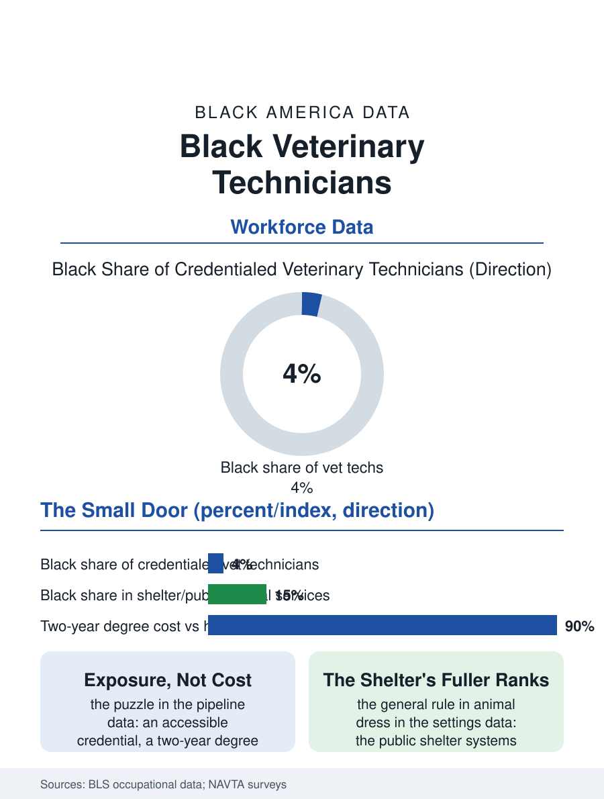

Black Employment
The Small Door: Black Veterinary Technicians
The nurses of animal medicine at four percent, in a profession whose door the community has barely been shown. The vet tech file.

Veterinary technicians are the nurses of animal medicine, credentialed, skilled, and, in a profession whose client base and workforce both skew away from Black America, among the least numerous of the health occupations in this atlas relative to the work's accessibility. This article reads the veterinary technician file.
A Small Door Into Animal Medicine
The occupation's structure mirrors the human clinic's: the credentialed technician performs the anesthesia, the dentistry, the laboratory, and the radiology of the animal hospital under the veterinarian's direction, on a two-year degree and a national examination, at a wage in the care economy's band, in a workforce whose Black share the professional association's surveys place in the low single digits, among the lowest of the health files, against an entry cost no higher than the medical assistant's. The pipeline's thinness is therefore the file's puzzle and its answer is the exposure file's: the veterinary world reaches the young through the pet's care and the farm and the zoo program, channels whose distribution the pet ownership file describes, and the profession's culture, its imagery and its associations, has historically not pictured the Black technician in its own account of itself, a representation gap the current generation's organizations of Black veterinary professionals exist to correct in the pattern of the other professions' caucuses. The large animal and equine file is the occupation's rural chapter, its technicians drawn from the farm and the FFA pipeline of the agricultural files, where the Black presence thins further still against the rural demographics and the horse world's own composition, while the research animal facilities of the universities and the pharmaceutical belt employ a laboratory tier of the occupation whose work, the care of the animals on which the trials file's science depends, is the profession's least visible and most ethically freighted, borne by technicians whose associations have built the support and the standards for it in the current era. The zoo and wildlife tier at the file's glamorous edge recruits from the whole country's applicant pool into a handful of chairs, its demographics the file's standing reproach and its internship's unpaid terms the filter the wealth file predicts.
The Shelter and the Specialty
The settings divide the workforce's Black presence instructively: the shelter and humane systems, the municipal and nonprofit animal services of the cities, employ a substantially fuller Black workforce at every tier than the private companion practice's, a distribution that maps the public and nonprofit files' general rule onto animal medicine entire, with the specialty and emergency hospitals' premium tiers between them. The work's emotional file is the occupation's own: the euthanasia's assistance, the client's grief at the counter, the compassion fatigue literature's veterinary chapter recording the profession's elevated burden in terms the workforce's advocates have made a policy file of their own, with the Black technician carrying it inside a workplace where the support file's assumption of the shared background may not hold.
The Animals' Census
The veterinary technician file closes on the animals' own demographics, because the workforce's future is written in the pet file's growth: the Black household's rising pet ownership and the veterinary industry's expansion into the neighborhoods the pet retail file maps are building the client base whose presence in the waiting room is the pipeline's best recruiting instrument, the child who watches her dog's care delivered by hands like her family's forming the intention the exposure file says the profession must learn to receive. The association counts the credentialed technicians in the tens of thousands, its diversity data the file's standing headline. The last entry is the anesthesia's monitoring at the surgical table, the technician's eyes on the animal's numbers through the procedure's length, a vigilance identical in form to the human files', practiced in a profession whose door, the data say, the community has barely been shown, which is the file's whole finding in a single watch kept. The credential's portability across the state lines is the occupation's current legislative file, the compact's slow construction repeating the nursing file's history at the smaller scale, with the military spouse technician as its standing exhibit. It is the work the whole building quietly assumes, and the file's purpose is to stop assuming it silently.
More in Black Employment
The Black Unemployment Rate: The Two-to-One Pattern
Black unemployment runs at roughly twice the White rate — 5.5 percent against 3.3 percent in annual averages — a ratio stable across five decades of federal data. How it is measured and why it persists.
Black Median Weekly Earnings: The 80-Cent Ratio
Black full-time workers earn a median of about $900 a week — roughly 80 cents for every dollar White workers earn. The BLS earnings data by group, gender, and occupation.
Black Labor Force Participation: Working at National Rates
Black labor force participation runs at roughly the national rate — and Black women participate at higher rates than White women. The BLS participation data.
Source: Bureau of Labor Statistics occupational employment data; National Association of Veterinary Technicians in America demographic surveys.